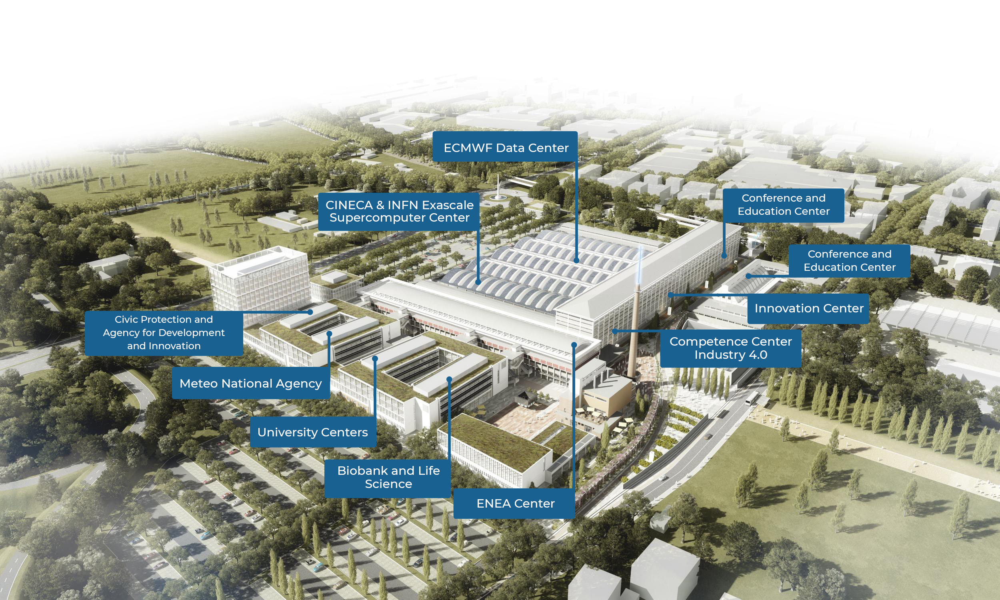
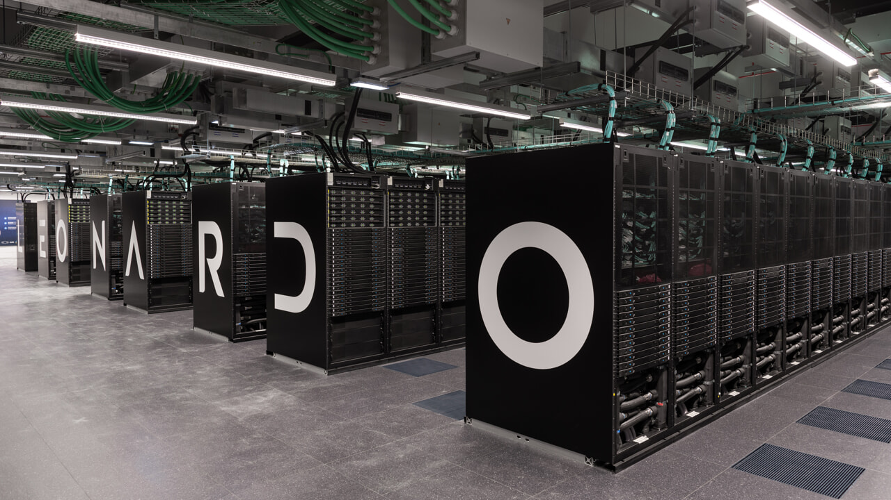

Tecnopolo Di bologna e il suo prezioso Leonardo
COS'E' IL TECNOPOLO?
Il Tecnopolo di Bologna è un importante hub di innovazione e ricerca, focalizzato su tecnologie avanzate e trasferimento tecnologico. Situato nel cuore del capoluogo emiliano, ospita centri di ricerca, startup e aziende che lavorano in ambiti come la robotica, l'intelligenza artificiale e l'industria 4.0. Il Tecnopolo è un punto di riferimento per l'ecosistema innovativo della città, promuovendo la collaborazione tra università, ricerca e industria.
DI COSA SI OCCUPA LEONARDO
Leonardo è uno dei supercomputer più potenti al mondo, sviluppato nell'ambito del programma europeo EuroHPC. Situato a Bologna, presso il centro di calcolo CINECA, è in grado di eseguire milioni di operazioni al secondo, offrendo supporto a progetti di ricerca avanzata in settori come la simulazione, la previsione climatica, la medicina e l'intelligenza artificiale. Grazie alla sua potenza, Leonardo contribuisce a spingere i confini della scienza e dell'innovazione tecnologica, rendendo l'Italia protagonista nel campo del calcolo ad alte prestazioni.
